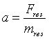
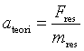
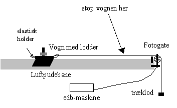
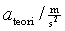
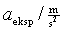
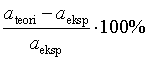

At eftervise Newtons 2. lov i det tilfælde, hvor et system af to legemer påvirkes af en konstant resulterende kraft.
Ifølge Newtons 2. lov får et system en konstant acceleration,

, hvor mres er masse af vogn + træklod. Newtons 2. lov forudsiger altså to ting:
- hastigheden vokser lineært som funktion af tiden, da accelerationen er konstant.
- accelerationen er givet ved

.
Øvelsen går nu ud på at undersøge, om påstand 1 og 2 er opfyldt. For at undersøge, om påstand 1 er opfyldt, afbildes de målte hastigheder som funktion af tiden. Hvis hastigheden afhænger lineært af tiden, er påstand 1 opfyldt.
Påstand 2 er opfyldt, hvis den ud fra grafen bestemte acceleration aeksp stemmer overens med ateori.
 |
På billedet herover ses opstillingen. Systemet bestående af vogn og træklod. Systemet accelereres af tyngdekraften på trækloddet. Vognen er forsynet elastikholdere i begge ender, således at hverken trisse eller vogn ødelægges, når vognen når enden af banen.
Fotogaten tilsluttes LabPro. Trissen har 10 eger. Hver gang en ny eg bryder lyset, er vognen kørt 1,50 cm og samtidig har programmet Datalyse på pc’en aflæst tiden. Hænger loddet til start 150 cm over gulvet fås altså 100 målinger i en kørsel.
Husk, at man aldrig tilslutter (eller afmonterer) udstyr til en tændt pc!
Du har tændt for støvsugeren til luftpudebanen, vejet vogn og lod, anbragt vognen ved holdemagneten og loddet hænger i ro så højt som muligt.
Du har tændt for pc’en og startet programmet Datalyse. Valgt LabPro og i menuen for LabPro valgt Timer.
Afbryd strømmen til holdemagneten, stop vognen med hånden før den når den modsatte ende af banen. (Lav bare et par kvajemålinger!)
Der udføres 4 forsøg:
mlod = ca. 10 g og tom vogn
mlod = ca. 20 g og tom vogn
mlod = ca. 20 g og vogn belastet med 2 lodder á ca. 50g
mlod = ca. 20 g og vogn belastet med 4 lodder á ca. 50g
Ser grafen rimelig ud, udprintes denne. Vælg Differentiation i programmet. Herved tegnes (t, v)-grafen på skærmen. Vha. Regres tegnes bedste rette linie gennem de målte punkter. Også denne graf udprintes.
Formål, teori, beskrivelse af forsøget gang,
EDB-udskrift af ovenstående grafer. (Mindst én af hver type grafer).
En udfyldning af et skema som vist nedenfor, men lav dit eget skema i din rapport.
| Forsøgsrække | 1 | 2 | 3 | 4 |
Fres / N |
|
|
|
|
mres / kg |
|
|
|
|
 |
|
|
|
|
 |
|
|
|
|
 |
|
|
|
|
Husk et eksempel på alle slags udregninger i rapporten.
Angiv fejlkilder. Husk de vigtigste først! Hvilke fejlkilder vil mindste den målte acceleration?
Vurder forsøgets resultater, altså:
Du har måske bestemt både målt og beregnet acceleration med 4 betydende cifre, men alligevel er de kun de to første cifre de samme. Hvordan vil du forklare det?